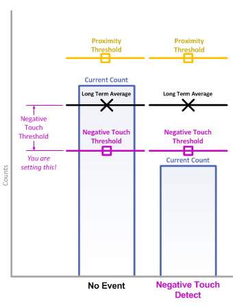
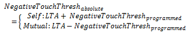

Negative Touch Threshold
The negative touch threshold provides a mechanism for detecting when an element's measurement
count adjusts quickly in the direction opposite of a touch. This scenario might happen during
device power-up if a user has their hand covering an electrode during power-up calibration. The library
makes the assumption at power-up that there is no user interaction. This may not always be the case. If
the system is calibrated with a user touching a sensor, when they remove their hand, the measurements from that
sensor's elements will quickly adjust in the opposite direction of a touch. Setting a negative touch threshold provides
a way to quickly detect this event. Upon detection, the application may want to re-calibrate to ensure
full sensitivity from the electrode immediately following the "negative" touch.
The negative touch threshold value sets the delta from the LTA required for a negative
touch detection to be declared. It is set as an absolute deviation from the long term average.
In other words, it specifies how large the delta must be against the direction of interest
(against the direction of a touch) for a negative touch detection to be declared.
Self Capacitance Example
When measuring an element in self-capacitance mode, a negative touch on an electrode
causes the capacitance of that electrode to decrease. This causes an increase in the measurement result.
When an increase in the measurement surpasses the negative touch threshold, the negative touch flags are
set in the element and sensor structures.

Mutual Capacitance Example
In mutual-capacitance mode, a negative touch on an electrode
causes the mutual capacitance between the Rx and Tx to increase.
This causes a decrease in the measurement result. When a decrease in the measurement
surpasses the negative touch threshold, the negative touch flags are set.

The absolute negative touch threshold at any given time is defined by the following:

Implementation Notes
One negative touch threshold is set and used
for a whole sensor. This means that you only need to set one threshold
per sensor, and all elements underneath that sensor will use that threshold.
While only one threshold is set, each element still tracks and shows its negative touch
status independently.
Affected Software Parameters
The Negative_Touch_Threshold parameter corresponds to the
ui16NegativeTouchThreshold
member of the
tSensor
type in the CapTIvate Touch Library.
The
bNegativeTouch
member of the
tElement
type in the CapTIvate Touch Library is set when an element has a
negative touch detection.
The
bSensorNegativeTouch
member of the
tSensor
type in the CapTIvate Touch Library is set when any element in that sensor
experiences a negative touch detection.